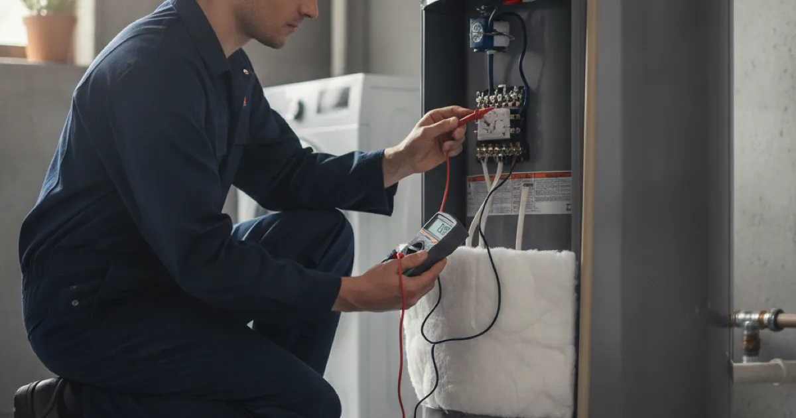

Water Heater Repair in Westchester County, NY
Plenty of water heaters get replaced when a part would have done. We diagnose first and tell you honestly which one you’re looking at.
- Licensed & Insured
- Same-Day Service Available
- Upfront Pricing
- 15+ Years of Experience

What the symptom usually means
Water heaters fail in fairly readable ways. Describing the symptom accurately over the phone often gets you most of the way to the answer.
- No hot water at all. On gas, usually a pilot, thermocouple, or gas valve issue. On electric, most often a failed upper element or a tripped high-limit cutout.
- Hot water that runs out quickly. Classic failed lower element on an electric heater, or heavy sediment reducing the usable volume of the tank.
- Lukewarm only. Often a thermostat, sometimes a crossed connection elsewhere in the house letting cold mix in.
- Rumbling or popping. Sediment on the tank floor with water boiling underneath it. Noisy, and a sign the tank is working harder than it should.
- Discoloured or smelly hot water. Usually the anode rod, which is a replaceable part rather than a dead heater.
- Water underneath. This is the one that matters most, and it splits two ways — see below.
That last one is worth being precise about. Water coming from the relief valve, a fitting, or a connection is a repair. Water weeping from the body of the tank itself is not repairable, and it means the heater needs replacing before it fails properly.
No hot water this morning?
Describe what it is doing and we will tell you what it likely needs.
Repair or replace
This is the decision most people actually want help with, so here’s how we think about it.
Usually worth repairing:
- The tank itself is sound and not leaking.
- The heater is comfortably within its expected life.
- The fault is a component — element, thermostat, thermocouple, valve, anode rod.
- It has been reliable until now.
Usually worth replacing:
- The tank is leaking from the body. No repair exists for this.
- It is past its expected life and has started needing attention repeatedly.
- The repair cost approaches a meaningful share of a new unit.
- It was undersized for the household to begin with, so fixing it returns you to a heater that was never adequate.
Age alone is not a reason to replace something working well. A fifteen-year-old heater in good condition owes you nothing and we will not tell you otherwise. But if yours is in that range and has just failed twice, the arithmetic changes, and replacing a heater past saving becomes the cheaper decision over any sensible time horizon.
The sediment problem
Sediment is behind more water heater complaints than any single component, and it is largely preventable.
Minerals in the water settle out as it heats and collect on the tank floor. On a gas heater, the burner then has to fire through that layer, which wastes energy, overheats the steel above it, and shortens the tank’s life. On an electric heater, sediment buries the lower element until it burns out.
Draining a few gallons off the bottom once a year clears most of it. It takes twenty minutes and it is the single highest-value piece of maintenance on the appliance. If yours has never been drained and is several years old, be aware the drain valve sometimes will not reseat afterwards — worth doing when someone is around who can deal with that rather than on a Sunday evening.
ENERGY STAR publishes practical maintenance guidance for storage water heaters covering flushing, temperature settings, and anode rods, if you want to handle the routine side yourself.
What to check before you call
Before assuming the worst, a couple of quick checks are worth doing. On a gas heater, see whether the pilot is lit; on electric, check the breaker has not tripped and try the reset button on the upper thermostat.
If there is water pooling underneath, note where it is coming from — a fitting or the relief valve is a repair, while weeping from the tank body itself is not. Knowing which it is when you call helps us bring the right parts.
What affects the cost
A water heater repair is priced on the fault, and most are inexpensive component swaps — a thermostat, an element, a thermocouple, or an anode rod. We give you the number before starting.
The honest conversation is repair versus replace: if the tank is sound and the unit is within its expected life, a part is the sensible fix. If it is old and has failed repeatedly, the arithmetic shifts toward replacement, and we will say so rather than keep charging for repairs on a heater near its end.
Common questions
My pilot light keeps going out. Is that serious?
It is usually a failing thermocouple, which is an inexpensive part and a straightforward repair. It can occasionally point at a venting or draught problem, which matters more — worth having looked at rather than relighting it indefinitely.
What temperature should the heater be set to?
Around 120°F suits most households: hot enough for normal use, low enough to reduce scalding risk and slow mineral build-up. Some situations warrant higher, and a mixing valve is the safe way to do that.
Is a small amount of water near the heater normal?
Not really. Condensation happens on cold days with heavy use, but anything persistent should be traced. Relief valve discharge in particular means something is building pressure that needs investigating.
Can you repair a tankless unit?
Yes. Tankless heaters usually need descaling rather than part replacement, particularly where water is hard, and error codes generally point at the fault. Worth addressing rather than ignoring, since scale reduces output steadily.
How quickly can you come out?
Same-day service is often possible for no hot water. Call and we will give you a real answer rather than an optimistic one.
Let us get the hot water back
Licensed, insured, and honest about repair versus replace.